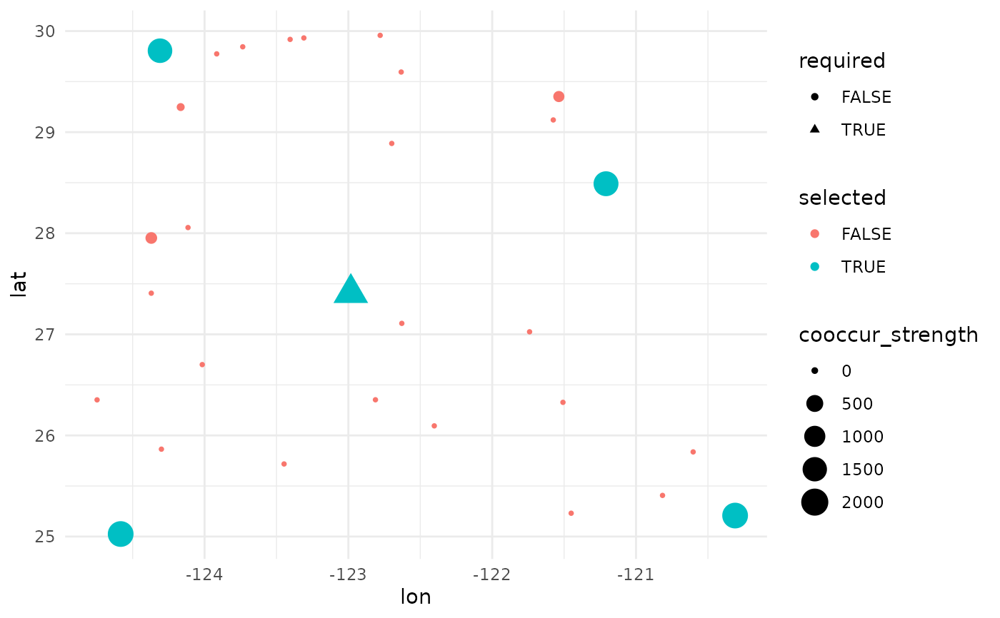
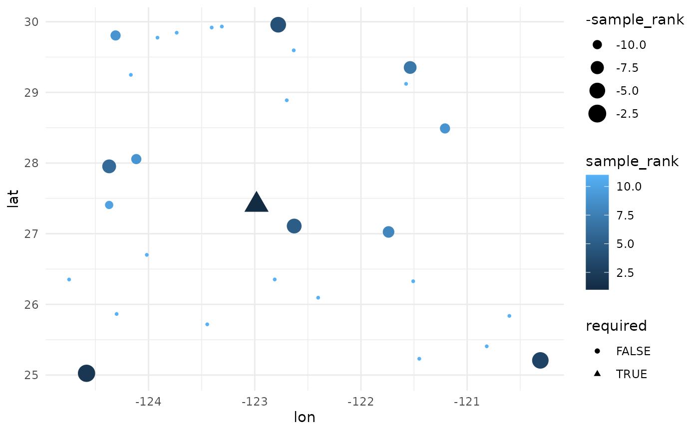

Maximize Dispersion Site Selection
maximizeDispersion.RdThis function operates on individual points, rather than drawing convex hulls or polygons around them. It is designed for rare species, where individual populations are relatively scarce, e.g. < 100, and have decent location data. It will perform bootstrap re-sampling to better estimate the true range of the extent species, as well as coordinate jittering to better address geo-location quality. After running n of these simulations it will identify the individual networks of sites (co-location) which is the most resilient to these perturbations, and should be less affected by data quality issues. A particular point of this function, relative to the grid based approaches in the package, is that it treats populations as individuals, and allows curators to focus more on 'edges' of species ranges.
As arguments it takes the known locations of populations, and will solve for n priority collection sites. Along this process it will also generate a priority ranking of all sites, indicating a naive possible order for prioritizing collections; although opportunity should never discard a site. A required input parameter is a column indicating whether a site is a required. Required sites (1 - as many as < n_sites) will serve as fixed parameters in the optimization scenario which greatly speed up run time. They can represent: existing collections, collections with a very strong chance of happenging due to a funding agency mechanism, or otherwise a single population closet to the geographic center of the species. Notably the solve will be 'around' this site, hence the solves are not purely theoretical, but linked to a pragmatic element.
Usage
maximizeDispersion(
input_data,
lambda_var = 0.15,
n_sites = 5,
weight_1 = 1,
weight_2 = 0,
n_bootstrap = 999,
dropout_prob = 0.15,
objective = c("sum", "maxmin"),
n_local_search_iter = 100,
n_restarts = 3,
seed = NULL,
verbose = TRUE
)Arguments
- input_data
A list with two elements: 'distances' (distance matrix or array) and 'sites' (data frame of site metadata).
- lambda_var
Essentially a smoothing parameter that controls the trade-off between maximizing dispersion and minimizing variance in pairwise distances among selected sites. higher values prioritize variance reduction more strongly. We recommend checking stops between 0.05 and 0.3 to see what works best for your data. Also check up at 0.5+, when getting started, to get a feel for how strong the variance reduction penalization can become.
- n_sites
The number of sites which you want to select for priority collection. Note that the results will return a rank of prioritization for all sites in the data.
- weight_1
Weights for combining multiple distance matrices (if provided). weight_1 is for the geographic distance matrix
- weight_2
Weights for combining multiple distance matrices (if provided). weight_2 is for the climatic distance matrix (if provided).
- n_bootstrap
Number of bootstrap replicates to perform.
- dropout_prob
Probability of dropping non-seed sites in each bootstrap replicate.
- objective
Objective function to optimize: "sum" (dispersion sum with variance penalty) or "maxmin" (maximize minimum distance).
- n_local_search_iter
Number of local search iterations per restart.
- n_restarts
Number of random restarts per bootstrap replicate.
- seed
Random seed for reproducibility.
- verbose
Whether to print progress information. Will print a message on run settings, and a progress bar for the bootstraps.
Details
Select a subset of sites that maximize spatial dispersion using a bootstrapped local search algorithm, combining both maximizing distance and minimizing variance.
Examples
library(ggplot2)
n_sites <- 30 # number of known populations
df <- data.frame(
site_id = seq_len(n_sites),
lat = runif(n_sites, 25, 30), # play with these to see elongated results.
lon = runif(n_sites, -125, -120),
required = FALSE,
coord_uncertainty = 0
)
#function relies on at least one required point. here arbitrarily place near geographic center
dists2c <- greatCircleDistance(
median(df$lat),
median(df$lon),
df$lat,
df$lon
)
df[order(dists2c)[1],'required'] <- TRUE
## we will simulate coordinate uncertainty on a number of sites.
uncertain_sites <- sample(setdiff(seq_len(n_sites), which(df$required)), size = min(6, n_sites-3))
df$coord_uncertainty[uncertain_sites] <- runif(length(uncertain_sites), 1000, 10000) # meters
# the function can take up to take matrices. the first (required) is a geographic distance
# matrix. calculate this with the `greatCircleDistance` fn from the package for consistency.
# (it will be recalculated during simulations). `sf` gives results in slightly diff units.
dist_mat <- sapply(1:nrow(df), function(i) {
greatCircleDistance(
df$lat[i], df$lon[i],
df$lat, df$lon
)
})
# the input data is a list, the distance matrix, and the df of actual point locations.
head(df)
#> site_id lat lon required coord_uncertainty
#> 1 1 27.40703 -124.3706 FALSE 0.000
#> 2 2 27.02518 -121.7400 FALSE 0.000
#> 3 3 29.35227 -121.5366 FALSE 0.000
#> 4 4 29.95740 -122.7790 FALSE 7782.969
#> 5 5 29.24809 -124.1661 FALSE 0.000
#> 6 6 28.05629 -124.1151 FALSE 0.000
test_data <- list(distances = dist_mat, sites = df)
rm(dist_mat, df, n_sites, uncertain_sites, dists2c)
# small quick run (fast); timing for R package / CRAN status.
system.time(
res <- maximizeDispersion( ## reduce some parameters for faster run.
input_data = test_data,
lambda_var = 0.2,
n_bootstrap = 500,
objective = "maxmin",
n_local_search_iter = 50,
n_restarts = 2
)
)
#> Sites: 30 | Seeds: 1 | Requested: 5 | Coord. Uncertain: 6 | BS Replicates: 500
#>
|
| | 0%
|
| | 1%
|
|= | 1%
|
|= | 2%
|
|== | 2%
|
|== | 3%
|
|=== | 4%
|
|=== | 5%
|
|==== | 5%
|
|==== | 6%
|
|===== | 7%
|
|===== | 8%
|
|====== | 8%
|
|====== | 9%
|
|======= | 9%
|
|======= | 10%
|
|======= | 11%
|
|======== | 11%
|
|======== | 12%
|
|========= | 12%
|
|========= | 13%
|
|========== | 14%
|
|========== | 15%
|
|=========== | 15%
|
|=========== | 16%
|
|============ | 17%
|
|============ | 18%
|
|============= | 18%
|
|============= | 19%
|
|============== | 19%
|
|============== | 20%
|
|============== | 21%
|
|=============== | 21%
|
|=============== | 22%
|
|================ | 22%
|
|================ | 23%
|
|================= | 24%
|
|================= | 25%
|
|================== | 25%
|
|================== | 26%
|
|=================== | 27%
|
|=================== | 28%
|
|==================== | 28%
|
|==================== | 29%
|
|===================== | 29%
|
|===================== | 30%
|
|===================== | 31%
|
|====================== | 31%
|
|====================== | 32%
|
|======================= | 32%
|
|======================= | 33%
|
|======================== | 34%
|
|======================== | 35%
|
|========================= | 35%
|
|========================= | 36%
|
|========================== | 37%
|
|========================== | 38%
|
|=========================== | 38%
|
|=========================== | 39%
|
|============================ | 39%
|
|============================ | 40%
|
|============================ | 41%
|
|============================= | 41%
|
|============================= | 42%
|
|============================== | 42%
|
|============================== | 43%
|
|=============================== | 44%
|
|=============================== | 45%
|
|================================ | 45%
|
|================================ | 46%
|
|================================= | 47%
|
|================================= | 48%
|
|================================== | 48%
|
|================================== | 49%
|
|=================================== | 49%
|
|=================================== | 50%
|
|=================================== | 51%
|
|==================================== | 51%
|
|==================================== | 52%
|
|===================================== | 52%
|
|===================================== | 53%
|
|====================================== | 54%
|
|====================================== | 55%
|
|======================================= | 55%
|
|======================================= | 56%
|
|======================================== | 57%
|
|======================================== | 58%
|
|========================================= | 58%
|
|========================================= | 59%
|
|========================================== | 59%
|
|========================================== | 60%
|
|========================================== | 61%
|
|=========================================== | 61%
|
|=========================================== | 62%
|
|============================================ | 62%
|
|============================================ | 63%
|
|============================================= | 64%
|
|============================================= | 65%
|
|============================================== | 65%
|
|============================================== | 66%
|
|=============================================== | 67%
|
|=============================================== | 68%
|
|================================================ | 68%
|
|================================================ | 69%
|
|================================================= | 69%
|
|================================================= | 70%
|
|================================================= | 71%
|
|================================================== | 71%
|
|================================================== | 72%
|
|=================================================== | 72%
|
|=================================================== | 73%
|
|==================================================== | 74%
|
|==================================================== | 75%
|
|===================================================== | 75%
|
|===================================================== | 76%
|
|====================================================== | 77%
|
|====================================================== | 78%
|
|======================================================= | 78%
|
|======================================================= | 79%
|
|======================================================== | 79%
|
|======================================================== | 80%
|
|======================================================== | 81%
|
|========================================================= | 81%
|
|========================================================= | 82%
|
|========================================================== | 82%
|
|========================================================== | 83%
|
|=========================================================== | 84%
|
|=========================================================== | 85%
|
|============================================================ | 85%
|
|============================================================ | 86%
|
|============================================================= | 87%
|
|============================================================= | 88%
|
|============================================================== | 88%
|
|============================================================== | 89%
|
|=============================================================== | 89%
|
|=============================================================== | 90%
|
|=============================================================== | 91%
|
|================================================================ | 91%
|
|================================================================ | 92%
|
|================================================================= | 92%
|
|================================================================= | 93%
|
|================================================================== | 94%
|
|================================================================== | 95%
|
|=================================================================== | 95%
|
|=================================================================== | 96%
|
|==================================================================== | 97%
|
|==================================================================== | 98%
|
|===================================================================== | 98%
|
|===================================================================== | 99%
|
|======================================================================| 99%
|
|======================================================================| 100%
#> user system elapsed
#> 2.397 0.001 2.398
### first selected
ggplot(data = res$input_data,
aes(
x = lon,
y = lat,
shape = required,
size = cooccur_strength,
color = selected
)
) +
geom_point() +
# ggrepel::geom_label_repel(aes(label = site_id), size = 4) +
theme_minimal() +
labs(main = 'Priority Selection Status of Sites')
#> Ignoring unknown labels:
#> • main : "Priority Selection Status of Sites"

### order of sampling priority ranking plot.
ggplot(data = res$input_data,
aes(
x = lon,
y = lat,
shape = required,
size = -sample_rank,
color = sample_rank
)
) +
geom_point() +
# ggrepel::geom_label_repel(aes(label = sample_rank), size = 4) +
theme_minimal()
